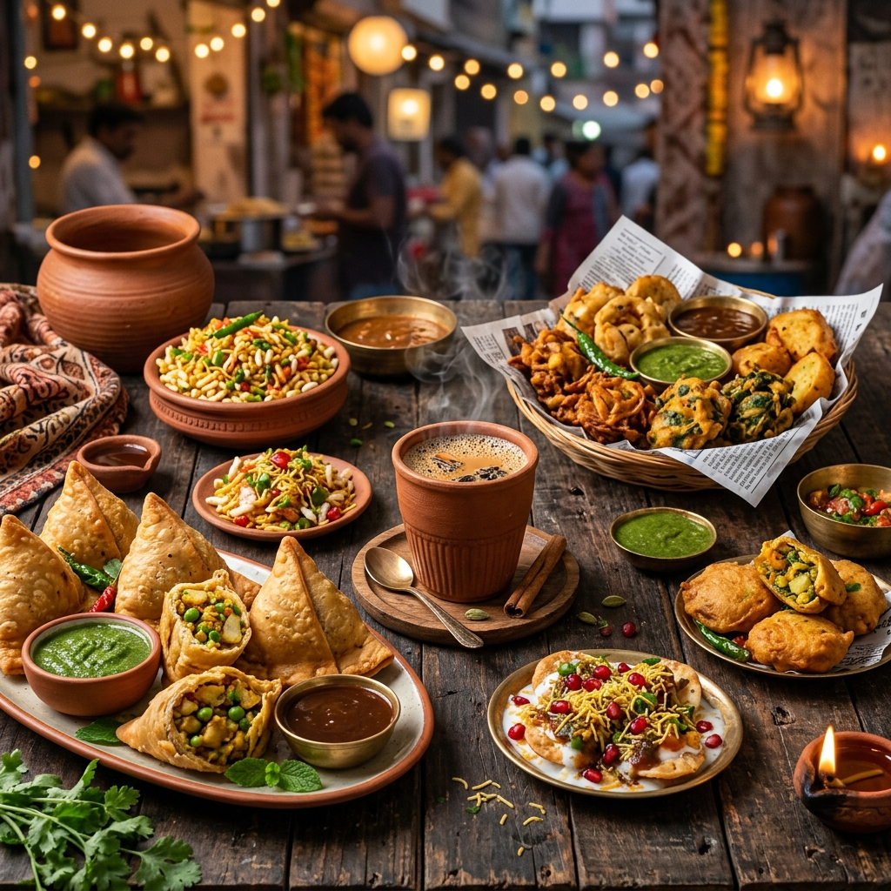

Hand-crafted pakoras & snacks made with secret family recipes, premium ingredients, and 30+ years of love. Rated ⭐ 5.0 by our regulars.
Since 1991, Jaiveer Di Hatti has been synonymous with the authentic taste of Civil Lines, Ludhiana. What started as a humble street cart has blossomed into one of Ludhiana's most beloved snack landmarks.
Our secret lies in our commitment to tradition. We still use the same family recipes, grinding our own spices and sourcing the freshest ingredients daily. Every bite is a piece of Ludhiana's culinary heritage.

WRCP+GFM, Guru Nanak Pura, New Kundanpuri, Civil Lines, Ludhiana, Punjab 141001
Open Daily · 8:00 AM – 9:00 PM
Rated 5.0 · Purely Vegetarian
Get Directions